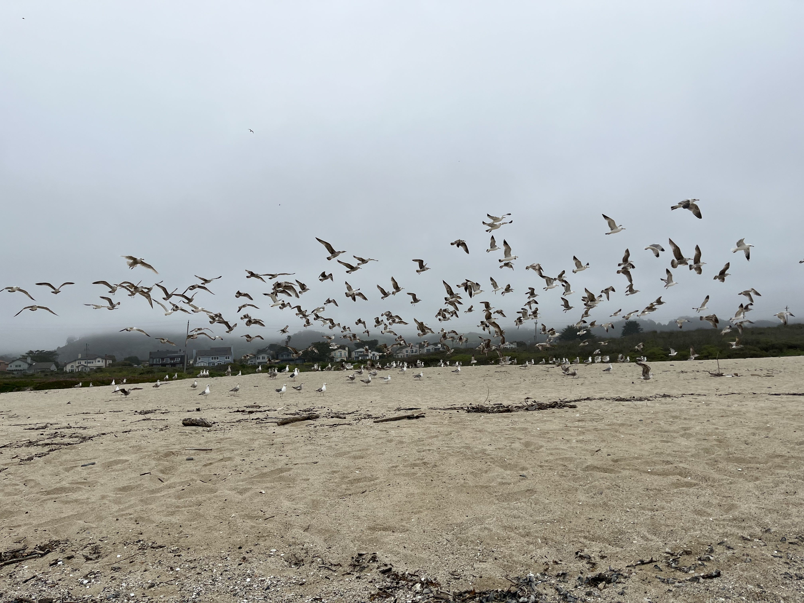
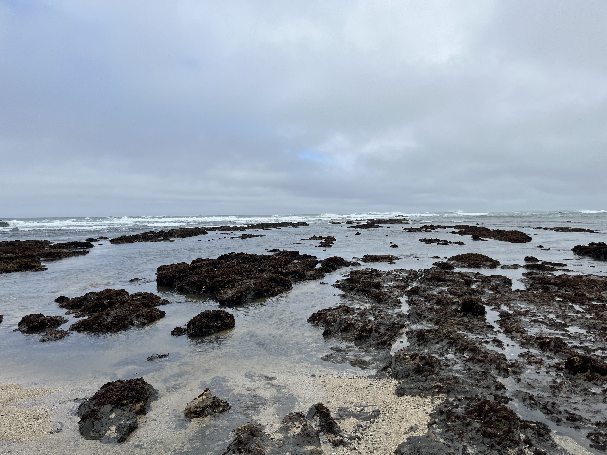
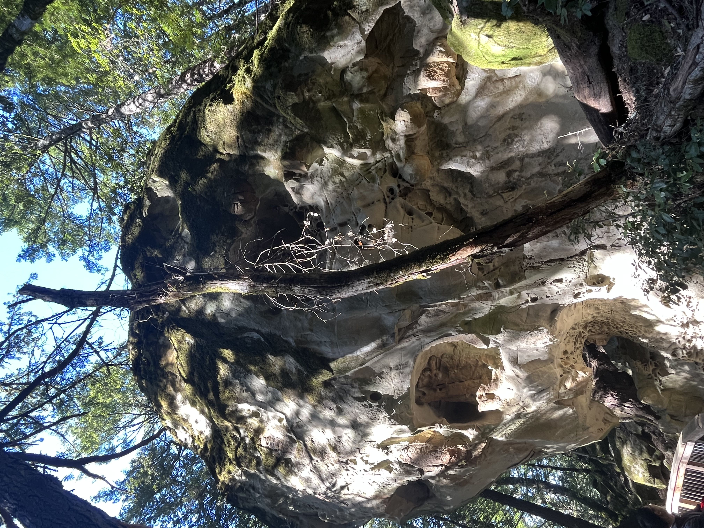

美国出差日记 - 5月
5.1 - 5.5 上班
5.6 在单位加班，晚上去机场接同事了。
5.7 带同事去附近的safeway买了点日用品，然后带他们去stanford U看看，下午休息了一阵子，晚上去附近的dutch goose来了个hot dog.
5.8 - 5.12 上班
5.13 上午去chase办了张卡，完了下午去了一趟costco，回来的时候差不多下午4:30了，特别热。到家之后洗了个澡，然后就来单位了。
5.14 上午带同事去看了一下moss bench 和 half moon bay, 晚上去找yulei吃了个饭。


5.15 - 5.19 上班，最后一天去把车还了。
5.20 - 5.21 周六上午加班，下午和Celonis的同事去附近的Skeggs Points来了个5miles的trail，晚上去附近的鲤鱼门吃饭。周日没啥事去单位呆着了。

5.22 - 5.26 上班。
5.27 - 5.29 加班三天。